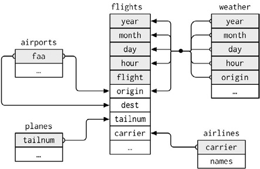
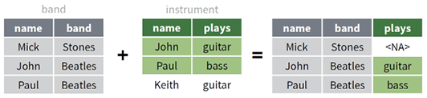
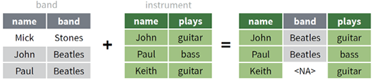
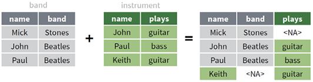
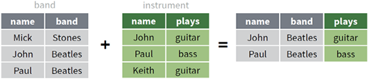

第 2 数据操作
上一章把向量化与函数式编程用于向量、列表和函数；本章按照教材第 2 章的顺序，把这些思想提升到数据框：先认识 tidyverse 与管道，再学习数据读写、连接、重塑和五类基本操作，继而处理按行、窗口、滑窗与整洁计算，最后用 data.table 建立另一套高性能数据语法。
教材主线：复杂的数据任务通常不是由一个“万能函数”完成，而是先被拆成若干可以验证的基本操作，再通过管道连接起来。
本章学习目标
完成本章后，你应当能够：
- 用管道把数据操作写成从输入到输出的可读流程；
- 根据文件格式、编码和数据规模选择读写函数；
- 先检查键及其关系，再安全地连接多个数据表；
- 识别整洁数据，并在长表、宽表和嵌套结构之间转换；
- 熟练组合
select()、mutate()、filter()、arrange()、summarise()与group_by()； - 理解按行计算、窗口函数、滑窗迭代和整洁计算的适用边界；
- 读懂 data.table 的
DT[i, j, by]语法，并理解按引用修改。
本章的读代码约定：代码注释重点解释“为什么做这一步”“数据形状怎样变化”和“结果怎样检查”。先读注释预测输出，再运行代码；不要把注释当作跳过思考的答案。
2.1 tidyverse 简介与管道
2.1.1 tidyverse 包简介
tidyverse 不是单个函数包，而是一组遵循相近设计原则的 R 包。核心包覆盖数据导入、整理、转换、可视化和函数式迭代。
| 任务 | 主要包 | 本章常用函数 |
|---|---|---|
| 数据导入 | readr | read_csv(), write_csv(), read_rds() |
| 数据整理 | tidyr | pivot_longer(), pivot_wider(), separate() |
| 数据转换 | dplyr | filter(), mutate(), summarise(), *_join() |
| 字符处理 | stringr | str_*() |
| 函数式迭代 | purrr | map_*(), walk_*(), reduce() |
| 数据可视化 | ggplot2 | ggplot(), geom_*() |
教材把 tidyverse 的优势概括为统一的数据结构、相对一致的接口，以及可以由管道组织的整洁流程。更深一层，它把两种思维结合起来：
- 向量化：一次处理一整列，而不是手工遍历每个单元格；
- 函数式编程：把“要重复的动作”表示为函数，再交给
across()、map()或分组机制批量应用。
Code
# 目标：对每个班级的三门成绩使用同一汇总规则。
class_summary <- students |>
group_by(class) |> # 先把数据拆成 A班、B班两个组
summarise(
across(
chinese:english, # 同时选择三门数值列
\(x) mean(x, na.rm = TRUE), # 同一个函数作用于每一列、每一组
.names = "avg_{.col}" # 让结果列名说明统计量和原列
),
.groups = "drop" # 汇总后解除分组，避免影响后续操作
)
class_summary这段代码没有写六次 mean()。group_by()负责“按组拆分”，across()负责“按列拆分”，匿名函数只描述一个小单元应怎样计算，最后由 dplyr 自动合并结果。这正是教材所强调的“分解—分别操作—重新组合”。
2.1.2 管道操作
管道把左侧对象传给右侧函数。课程以 R 自带的 |> 为主，同时要求能够识别教材和旧项目中常见的 %>%。
Code
# 目标：从 mtcars 中找出各气缸组平均油耗最高的组。
best_group <- mtcars |>
as_tibble(rownames = "model") |> # 行名转为普通列，便于后续保留车型名
group_by(cyl) |> # 后续汇总分别在每个气缸组内进行
summarise(
n = n(),
avg_mpg = mean(mpg),
.groups = "drop"
) |>
arrange(desc(avg_mpg)) # 最后把平均油耗从高到低排列
best_group读管道时从上到下读成一句话：“取 mtcars，转成 tibble，按气缸数分组，计算样本量和平均油耗，再按平均油耗降序排列。”每一步都返回下一步可以接收的数据框。
2.1.2.1 参数不是第一个位置时
R 原生管道默认把左侧结果放到右侧函数的第一个参数。若目标位置不是第一个参数，可用匿名函数明确说明。
Code
letters[1:4] |>
(\(x) stringr::str_c("变量：", x))() # x 明确进入 str_c() 的第二个位置
#> [1] "变量：a" "变量：b" "变量：c" "变量：d"使用 %>% 时，教材中的占位符 . 可以把数据放到其他参数位置；原生 |> 不把 . 当作通用占位符。因此课程代码优先使用小型匿名函数，它的输入位置最清楚。
2.1.2.2 调试长管道
不要等到管道最后才看结果。可以给关键中间结果命名，或临时在中间插入 glimpse()。
Code
# 先单独检查筛选是否符合预期，再继续汇总。
complete_scores <- students |>
filter(if_all(chinese:english, \(x) !is.na(x)))
glimpse(complete_scores)
#> Rows: 4
#> Columns: 7
#> $ student_id <chr> "S01", "S03", "S04", "S06"
#> $ class <chr> "A班", "A班", "B班", "B班"
#> $ name <chr> "晨曦", "星河", "青禾", "景明"
#> $ gender <chr> "女", "女", "男", "男"
#> $ chinese <dbl> 86, 91, 68, 77
#> $ math <dbl> 92, 89, 72, 81
#> $ english <dbl> 88, 95, 74, 79
# 在确认行数和列类型后，再计算每位学生的均分。
complete_scores |>
mutate(avg_score = rowMeans(pick(chinese:english))) |>
select(student_id, name, avg_score)2.2 数据读写
2.2.1 用于数据读写的包与函数
教材按格式介绍了常见数据导入包。选择工具时先问“文件是什么格式”，再问“是否需要保留标签、公式或工作表结构”。
| 格式 | 推荐包 | 读取函数示例 | 说明 |
|---|---|---|---|
| CSV/TSV/分隔文本 | readr | read_csv(), read_tsv() |
返回 tibble，列类型诊断清楚 |
| Excel | readxl | read_excel(), read_xlsx() |
可指定工作表和单元格范围 |
| SPSS/Stata/SAS | haven | read_sav(), read_dta(), read_sas() |
尽量保留标签信息 |
| JSON | jsonlite | fromJSON() |
常需要后续方形化 |
| Word/PDF/纯文本集合 | readtext | readtext() |
面向文本语料导入 |
| R 单对象 | readr/base R | read_rds(), readRDS() |
保留 R 类型和属性 |
安装扩展包只做一次；分析脚本中使用 library() 或 包名::函数名()。对于不一定每台课堂电脑都安装的包，本章示例用 包名::函数名() 标明来源。
2.2.2 数据读写实例
2.2.2.1 读取 CSV：先描述缺失值与列类型
Code
# 目标：模拟读取一个含中文、日期和缺失标记的 CSV 文件。
csv_text <- I(
"student_id,name,exam_date,score\nS01,晨曦,2024-06-01,92\nS02,远航,2024-06-01,缺考"
)
exam <- read_csv(
csv_text,
na = "缺考", # 明确业务中的缺失值标记
col_types = cols(
student_id = col_character(), # 学号不是用于运算的数值
name = col_character(),
exam_date = col_date(format = "%Y-%m-%d"),
score = col_double()
)
)
glimpse(exam) # 检查解析后的类型，而不只看打印值
#> Rows: 2
#> Columns: 4
#> $ student_id <chr> "S01", "S02"
#> $ name <chr> "晨曦", "远航"
#> $ exam_date <date> 2024-06-01, 2024-06-01
#> $ score <dbl> 92, NA现实数据中，身份证号、邮编、带前导零的编码通常应读为字符。自动猜测很方便，但关键字段应显式指定类型。
2.2.2.2 批量读取
当前 readr 可以直接接收多个同结构文件路径，并用 id 记录来源文件。
Code
# 目标：把 data/monthly/ 下所有月度 CSV 纵向合并。
files <- fs::dir_ls("data/monthly", glob = "*.csv")
monthly <- readr::read_csv(
files,
id = "source_file", # 保留来源，便于追踪异常记录
show_col_types = FALSE
)
count(monthly, source_file) # 检查每个文件贡献了多少行Excel 批量导入通常先列出文件或工作表，再用 map_dfr()逐个读取并按行合并。
Code
# 多个工作簿：每个文件结构相同。
excel_files <- fs::dir_ls("data/monthly", glob = "*.xlsx")
excel_data <- excel_files |>
set_names(path_file(excel_files)) |> # 名称将在 .id 中成为来源标签
map_dfr(readxl::read_xlsx, .id = "source_file")
# 一个工作簿的多个工作表：先取得工作表名称，再逐表读取。
book_path <- "data/sales.xlsx"
sheet_data <- readxl::excel_sheets(book_path) |>
set_names() |>
map_dfr(\(sheet) readxl::read_xlsx(book_path, sheet = sheet),
.id = "sheet")2.2.2.3 写出 CSV、Excel 与 RDS
Code
# CSV 适合与其他软件交换；write_excel_csv() 会写入 UTF-8 BOM，
# 在部分桌面版 Excel 中直接打开中文时更稳妥。
write_csv(class_summary, "output/class_summary.csv")
write_excel_csv(class_summary, "output/class_summary_excel.csv")
# RDS 适合保存一个 R 对象，并保留日期、因子、列表列等 R 类型。
write_rds(class_summary, "output/class_summary.rds")
class_summary_again <- read_rds("output/class_summary.rds")
# 多工作表 Excel 需要 writexl 或 openxlsx 等扩展包。
writexl::write_xlsx(
list("班级汇总" = class_summary, "学生明细" = students),
"output/teaching_report.xlsx"
)写文件前的三项检查：输出目录是否存在；文件是否会覆盖已有结果；导出后能否重新读入并保持行数、列名和关键类型。
2.2.3 连接数据库
教材以 MySQL 展示 DBI 与 dbplyr 的工作流。课堂用 SQLite 内存数据库复现同一思想：连接、写表、延迟查询、收集结果、断开连接。这样不需要服务器，也不会在讲义中暴露账号或密码。
Code
# 1. 建立只存在于当前 R 会话中的 SQLite 数据库。
con <- DBI::dbConnect(RSQLite::SQLite(), ":memory:")
# 2. 写入教学数据；overwrite 只针对这个临时数据库中的同名表。
DBI::dbWriteTable(con, "students", students, overwrite = TRUE)
# 3. tbl() 创建远程表引用；下面的动词先被翻译成 SQL，不立刻取回全部数据。
remote_students <- dplyr::tbl(con, "students")
query <- remote_students |>
filter(math >= 80) |>
select(student_id, class, name, math)
show_query(query) # 检查 dbplyr 生成的 SQL
#> <SQL>
#> SELECT `student_id`, `class`, `name`, `math`
#> FROM `students`
#> WHERE (`math` >= 80.0)
db_result <- collect(query) # 到这里才把结果取回本地 R
db_resultCode
DBI::dbDisconnect(con) # 用完连接后主动释放资源真实数据库的凭据不应写在 Rmd、脚本或 Git 仓库中。可以从环境变量读取，并只在本地设置：
Code
con <- DBI::dbConnect(
RMariaDB::MariaDB(),
host = Sys.getenv("DB_HOST"),
user = Sys.getenv("DB_USER"),
password = Sys.getenv("DB_PASSWORD") # 不把密码字面量写入代码
)2.2.4 关于中文编码
编码是“字符与字节之间的映射规则”。同一组字节若用错误规则解释，就会出现乱码。UTF-8 是跨平台项目的首选；GBK/GB18030 仍常见于历史中文文件。
Code
# 文件本身是 GBK 时，要在读取阶段告诉 readr 正确的解码规则。
legacy <- read_csv(
"data/legacy_gbk.csv",
locale = locale(encoding = "GB18030")
)
# 不确定时可先抽取字节样本做启发式检测，再用业务常识核对。
readr::guess_encoding("data/legacy_gbk.csv")处理乱码按以下顺序排查：
- 确认文件实际编码，不要只看扩展名；
- 在读取函数中指定与文件一致的
locale(encoding = ...)； - 读入后检查关键中文字段和行数；
- 项目内部统一转为 UTF-8；
- 导出给 Excel 时，根据接收环境选择
.xlsx或带 BOM 的 CSV。
2.3 数据连接
多个数据表通过“键”建立关系。连接前必须回答三个问题：用哪些列匹配、这些列在每张表中是否唯一、未匹配记录应怎样处理。
教材用纽约航班数据展示了一个典型的关系数据模型：flights 是中心事实表，机场、飞机、航空公司和天气分别保存在其他表中。图中的连线不是“表看起来有关”，而是指出了可用于匹配的键。

Figure 2.1: 教材中的关系数据模型：多张表通过单键或复合键与航班事实表关联（原书图 2.10）
阅读这张图时，应把注意力放在“键由哪些列组成”：
flights$tailnum与planes$tailnum连接，补充飞机属性；flights$carrier与airlines$carrier连接，补充航空公司名称；flights$origin、flights$dest可分别与airports$faa连接；- 航班与天气需要用
year + month + day + hour + origin组成复合键。只用日期或机场中的某一列，通常无法唯一定位一条天气记录。
这说明连接键不一定只有一列，而且同一张表中的不同列可以分别指向另一张表的同一个主键。
Code
# 检查键是否唯一：结果为 0 行，说明 majors 中 student_id 没有重复。
majors |>
count(student_id) |>
filter(n > 1)Code
# 检查左表中有哪些键在右表找不到；这往往是连接前最有价值的诊断。
students |>
anti_join(majors, by = join_by(student_id)) |>
select(student_id, name)一对多连接会让左表某一行复制成多行，这不一定是错误。例如“一个学生选多门课”本来就是一对多关系。危险的是在不知道关系的情况下意外制造行数膨胀。
2.3.1 合并行与合并列
Code
spring <- tibble(student_id = c("S01", "S02"), term = "春季", score = c(88, 79))
autumn <- tibble(student_id = c("S01", "S03"), term = "秋季", score = c(91, 95))
# bind_rows() 根据列名纵向堆叠；行数相加，列的含义必须一致。
all_terms <- bind_rows(spring, autumn, .id = "source_table")
all_termsCode
# bind_cols() 只按当前位置横向拼接，不根据键匹配。
# 只有两边行数和行序都已经确认一致时才使用。
bind_cols(
students |> select(student_id, name),
students |> transmute(total_known = rowSums(pick(chinese:english), na.rm = TRUE))
)若数据来自不同业务实体，优先使用连接而不是 bind_cols()；行序很容易在筛选或排序后改变。
2.3.2 根据值匹配合并数据框
2.3.2.1 六种连接的保留规则
| 函数 | 保留哪些行 | 是否增加右表列 | 典型问题 |
|---|---|---|---|
left_join() |
左表全部 | 是 | 给主表补充属性 |
right_join() |
右表全部 | 是 | 以右表为主表补属性 |
full_join() |
两表并集 | 是 | 汇总所有出现过的键 |
inner_join() |
两表交集 | 是 | 只分析两边都有的对象 |
semi_join() |
左表中匹配者 | 否 | 谁在名单里 |
anti_join() |
左表中未匹配者 | 否 | 谁没有匹配成功 |
2.3.2.2 如何阅读教材中的六种连接图
下面沿用教材中的 band_members 与 band_instruments 两张小表。图中灰色区域来自左表 band，绿色区域来自右表 instrument；结果表中的 <NA> 表示该键在另一张表没有匹配记录。
Code
# 教材图中的两张表：name 是连接键。
band <- dplyr::band_members
instrument <- dplyr::band_instruments
bandCode
instrument2.3.2.2.1 左连接：以左表为观察名单
left_join() 保留左表的全部行。Mick 在右表中没有乐器记录，因此结果中的 plays 为 NA；右表独有的 Keith 不会进入结果。
Code
band |>
left_join(instrument, by = join_by(name))
Figure 2.2: 左连接：保留左表全部成员，并把右表中匹配的 plays 列补到结果中（原书图 2.11）
2.3.2.2.2 右连接：以右表为观察名单
right_join() 保留右表的全部行。Keith 在左表中没有乐队信息，所以结果中的 band 为 NA；左表独有的 Mick 不会进入结果。
Code
band |>
right_join(instrument, by = join_by(name))
Figure 2.3: 右连接：保留右表全部成员，并把左表中匹配的 band 列补到结果中（原书图 2.12）
2.3.2.2.3 全连接：保留两张表出现过的所有键
full_join() 取两表键的并集。Mick 和 Keith 都被保留，但各自在另一张表中没有的信息显示为 NA。
Code
band |>
full_join(instrument, by = join_by(name))
Figure 2.4: 全连接：保留两张表中出现过的全部 name（原书图 2.13）
2.3.2.2.4 内连接：只保留两张表共有的键
inner_join() 取两表键的交集。只有 John 和 Paul 同时存在于两张表，因此 Mick 与 Keith 都被排除。
Code
band |>
inner_join(instrument, by = join_by(name))
Figure 2.5: 内连接：只保留两张表中都能匹配的 name（原书图 2.14）
2.3.2.3 将连接规则迁移到学生数据
Code
# 左连接：保留 students 的 6 行，为能匹配的学生补上 major。
student_profile <- students |>
left_join(majors, by = join_by(student_id))
student_profile |>
select(student_id, name, major)Code
# 内连接：只保留两张表都出现的 student_id。
students |>
inner_join(majors, by = join_by(student_id)) |>
select(student_id, name, major)Code
# 半连接只筛行、不添列；适合取得“已有专业信息的学生”。
students |>
semi_join(majors, by = join_by(student_id)) |>
select(student_id, name)当前 dplyr 的 join_by() 还支持不等连接、滚动连接和区间重叠连接。本章先掌握等值连接。若键列名不同，可以写 join_by(left_id == right_id)。
2.3.2.4 主动检查连接结果
Code
before_n <- nrow(students)
joined <- students |>
left_join(majors, by = join_by(student_id))
tibble(
stage = c("连接前", "连接后"),
rows = c(before_n, nrow(joined)),
unique_ids = c(n_distinct(students$student_id),
n_distinct(joined$student_id))
)若预期一对一，连接后行数却增加，应立即检查左右键的重复值。当前 dplyr 会对意外的多对多等值连接发出警告；确认多对多确为业务事实后，才显式声明相应关系。
2.4 数据重塑
2.4.1 什么是整洁的数据
整洁数据的三个规则是：每个变量一列、每个观测一行、每个值一个单元格。判断“变量”和“观测”必须结合研究问题；同一张表在不同分析目标下可能需要不同形状。
识别宽表中的隐藏变量：如果列名中出现年份、季度、组别或指标名称，这些列名很可能本应是一列中的“值”。
Code
sales_wide这里 2024_Q1、2024_Q2、2024_Q3 不是三个变量，而是“年份”和“季度”的取值；单元格中的数才是销售额。
2.4.2 宽表变长表
Code
# 目标：把季度藏在列名中的宽表整理成长表。
sales_long <- sales_wide |>
pivot_longer(
cols = starts_with("2024_"), # 只重塑季度列，store 保持不动
names_to = c("year", "quarter"), # 列名按下划线拆成两个变量
names_sep = "_",
values_to = "sales" # 原单元格值统一进入 sales 列
) |>
mutate(year = as.integer(year)) # 重塑后年份是字符，再转为整数
sales_long重塑前是 3 行 × 4 列；重塑后是 9 行 × 4 列。行数增加不是数据重复，而是每一行现在只表示“一个门店在一个季度的一次观测”。
当列名同时包含多个测量变量时，可以在 names_to 中使用特殊标记 .value。
Code
survey_wide <- tribble(
~site, ~A_count, ~A_height, ~B_count, ~B_height,
"北区", 7, 100, 2, 110,
"南区", 5, 95, 8, 90
)
survey_tidy <- survey_wide |>
pivot_longer(
-site,
names_to = c("species", ".value"), # count/height 继续成为结果列名
names_sep = "_"
)
survey_tidy2.4.3 长表变宽表
Code
# 目标：让每个季度回到独立列，便于制作横向报表。
sales_report <- sales_long |>
unite(period, year, quarter, sep = "_") |> # 先构造将要成为列名的 period
pivot_wider(
names_from = period,
values_from = sales
)
sales_reportpivot_wider() 要求“ID 列 + 新列名”能够唯一识别一个值。如果同一门店同一季度有多笔交易，需要先保留交易编号，或通过 values_fn 汇总。
Code
sales_detail <- tribble(
~store, ~quarter, ~sales,
"东区", "Q1", 50,
"东区", "Q1", 70,
"东区", "Q2", 138
)
sales_detail |>
pivot_wider(
names_from = quarter,
values_from = sales,
values_fn = sum, # 明确同一单元格出现多值时如何合并
values_fill = 0
)2.4.4 拆分列与合并列
Code
events <- tibble(
event_id = 1:3,
location = c("北京-海淀", "上海-浦东", "广州-天河")
)
events_split <- events |>
separate(
location,
into = c("city", "district"),
sep = "-"
)
events_splitCode
# unite() 是相反方向：把多列合并为一列。
events_split |>
unite(location, city, district, sep = "-")tidyr 当前还提供含义更明确的 separate_wider_delim() 与 separate_longer_delim()；教材中的 separate()、separate_rows() 仍常见，阅读旧项目时需要掌握。
Code
course_tags <- tibble(
course = c("R语言", "数据可视化"),
topics = c("对象,管道,函数", "图层,标度")
)
course_tags |>
separate_rows(topics, sep = ",") # 一个单元格含多个观测时，拆成多行2.4.5 方形化
方形化把 JSON/XML 常见的深层列表整理成规则行列。教材介绍 unnest_longer()、unnest_wider()、unnest_auto() 与 hoist()。
Code
# 每位教师的 profile 是一个命名列表，courses 又是一个长度不等的列表列。
nested <- tibble(
profile = list(
list(name = "甲", dept = "统计系"),
list(name = "乙", dept = "数据科学系")
),
courses = list(c("R语言", "统计计算"), "数据可视化")
)
rectangled <- nested |>
unnest_wider(profile) |> # 命名成分横向展开为 name、dept 两列
unnest_longer(courses) # 每个课程纵向展开为一行
rectangled如果只需要嵌套对象中的少数成分，使用 hoist() 可以避免把全部字段展开。
2.5 基本数据操作
dplyr 的五个核心动词可以回答五类问题：要哪些列、要哪些行、如何排序、怎样产生新列、怎样压缩成摘要。它们都以数据框为第一个参数，返回新的数据框，并可由管道组合。
2.5.1 选择列
Code
# 目标：创建一张仅含身份信息和三门成绩的分析表。
score_data <- students |>
select(
student_id:name, # 按列位置连续选择
class,
chinese:english # 三门成绩也是连续列
) |>
relocate(class, .after = student_id) # 调整列序，不改变数据值
score_data常用选择助手包括 starts_with()、ends_with()、contains()、matches()、where()、all_of() 和 any_of()。字符向量给出列名时，应使用 all_of()，避免把环境变量与数据列混淆。
Code
score_cols <- c("chinese", "math", "english")
students |>
select(student_id, name, all_of(score_cols))Code
students |>
rename(student_name = name) |>
select(student_id, student_name, where(is.numeric))all_of() 遇到不存在的列会报错；any_of() 会忽略不存在的列。需要严格保证输入模式时用前者，需要容忍可选字段时才用后者。
2.5.2 修改列
Code
# 目标：计算每人的已知科目数、总分、均分和等级。
student_scores <- students |>
mutate(
known_subjects = rowSums(!is.na(pick(chinese:english))),
total_score = rowSums(pick(chinese:english), na.rm = TRUE),
avg_score = total_score / known_subjects,
level = case_when(
avg_score >= 90 ~ "优秀",
avg_score >= 80 ~ "良好",
avg_score >= 60 ~ "及格",
TRUE ~ "需改进"
)
)
student_scores |>
select(student_id, name, known_subjects, avg_score, level)这里没有把缺失成绩当作 0 分：known_subjects 记录分母，na.rm = TRUE 只让总分忽略缺失值。这是一项业务选择，真实项目中应与数据负责人确认。
2.5.3 筛选行
Code
# 目标：筛选数学不缺失且至少为 80 分的学生。
students |>
filter(!is.na(math), math >= 80) |>
select(student_id, name, math)Code
# 所有三门成绩都达到 75 分；NA 不被当作 TRUE。
students |>
filter(if_all(chinese:english, \(x) !is.na(x) & x >= 75)) |>
select(student_id, name, chinese:english)Code
# 任意一门达到 90 分。
students |>
filter(if_any(chinese:english, \(x) x >= 90)) |>
select(student_id, name, chinese:english)filter() 按条件判断；slice_*() 按位置、大小或随机规则取行。
Code
students |>
slice_max(math, n = 2, with_ties = FALSE) |>
select(name, math)Code
students |>
distinct(class, gender) # 每种班级×性别组合只保留一次2.5.4 对行排序
Code
# 先按班级升序，再按数学降序；缺失值默认排在最后。
students |>
arrange(class, desc(math)) |>
select(class, name, math)排序只改变行序，不改变行数。时间序列使用 lag()、累计值或滑窗前，必须先确认排序变量。
2.5.5 分组操作
group_by() 不会立即改变数值；它改变后续动词的作用范围。分组后的 mutate() 仍返回每个原始观测，分组后的 summarise() 通常把每组压缩为一行。
Code
# 每位学生与本班数学均值比较；结果仍然是一人一行。
students |>
group_by(class) |>
mutate(
class_math_avg = mean(math, na.rm = TRUE),
math_diff = math - class_math_avg
) |>
ungroup() |>
select(class, name, math, class_math_avg, math_diff)Code
# 每班汇总为一行，并同时计算三门课的均值和标准差。
students |>
group_by(class) |>
summarise(
n_students = n(),
across(
chinese:english,
list(
mean = \(x) mean(x, na.rm = TRUE),
sd = \(x) sd(x, na.rm = TRUE)
),
.names = "{.col}_{.fn}"
),
.groups = "drop"
)只做一次分组汇总时，当前 dplyr 也可用 .by：
Code
students |>
summarise(
n = n(),
avg_math = mean(math, na.rm = TRUE),
.by = class # 只在这一次 summarise 中生效
)分组计数可用 count()；它等价于常见的 group_by(...) |> summarise(n = n())。
Code
students |>
count(class, gender, name = "n_students")2.6 其他数据操作
2.6.1 按行汇总
列式数据操作通常更快，应优先考虑 rowSums()、rowMeans() 等向量化函数。只有每一行需要返回不同结构或调用复杂函数时，才使用 rowwise()。
Code
# 向量化方案：每行三门成绩的均值。
students |>
mutate(avg_score = rowMeans(pick(chinese:english), na.rm = TRUE)) |>
select(name, avg_score)Code
# rowwise 方案：c_across() 把当前行所选列组合成向量。
students |>
rowwise(student_id) |>
mutate(
best_subject_score = max(c_across(chinese:english), na.rm = TRUE)
) |>
ungroup() |>
select(student_id, name, best_subject_score)rowwise() 可以理解为“每一行是一组”。使用完后显式 ungroup()，避免后续代码继续逐行工作。
2.6.2 窗口函数
汇总函数接收 n 个值、返回 1 个值；窗口函数接收 n 个值、返回 n 个值，因此很适合在 mutate() 中创建排名、前后期差值和累计量。
Code
daily_sales <- tibble(
day = as.Date("2024-01-01") + 0:5,
store = rep(c("东区", "西区"), each = 3),
sales = c(10, 14, 13, 8, 12, 18)
)
sales_window <- daily_sales |>
arrange(store, day) |> # lag 与 cumsum 都依赖当前行序
group_by(store) |>
mutate(
previous_sales = lag(sales), # 同一门店上一期销售额
change = sales - previous_sales,
cumulative_sales = cumsum(sales),
rank_in_store = min_rank(desc(sales))
) |>
ungroup()
sales_windowlag() 默认按当前行序移动；如果没有先排序，代码可能运行成功但含义错误。累计条件还可以用 cumany() 和 cumall() 表达“从首次发生之后”与“直到首次发生之前”。
2.6.3 滑窗迭代
教材使用 slider 包的 slide_*() 系列。它把“逐元素迭代”改为“逐窗口迭代”。由于 slider 不是 tidyverse 核心依赖，本段代码在安装后运行。
Code
library(slider)
daily_sales |>
arrange(store, day) |>
group_by(store) |>
mutate(
moving_avg_3 = slide_dbl(
sales,
\(x) mean(x, na.rm = TRUE), # 每个窗口内部执行的函数
.before = 2, # 当前值及前两个值，共 3 个位置
.complete = TRUE # 窗口不足 3 个时返回 NA
)
) |>
ungroup()slide_dbl() 按行位置滑动；日期不连续时，要计算真正的“过去 7 天”而不是“过去 7 行”，应使用 slide_index_dbl(.i = date, ...)。
Code
events_by_day |>
arrange(day) |>
mutate(
avg_last_7_days = slide_index_dbl(
.x = value,
.i = day,
.f = mean,
.before = 6,
.complete = TRUE
)
)2.6.4 整洁计算
dplyr 在数据屏蔽环境中允许直接写列名，在整洁选择参数中允许使用选择助手。编写自定义函数时，需要明确参数传入的是“裸列名”“选择表达式”还是“字符串列名”。
2.6.4.1 裸列名：使用 {{ }}
Code
# 目标：让调用者像使用 dplyr 一样传入不加引号的分组列和汇总列。
group_mean <- function(data, group_var, value_var) {
data |>
summarise(
n = sum(!is.na({{ value_var }})),
mean = mean({{ value_var }}, na.rm = TRUE),
.by = {{ group_var }}
)
}
group_mean(students, class, math)2.6.4.2 字符串列名：使用 .data[[...]]
Code
# 字符串通常来自 Shiny 输入、配置文件或循环变量。
mean_from_string <- function(data, value_name) {
data |>
summarise(mean = mean(.data[[value_name]], na.rm = TRUE))
}
mean_from_string(students, "english")2.6.4.3 多列选择：使用 {{ }} 或 all_of()
Code
summarise_selected <- function(data, columns) {
data |>
summarise(
across({{ columns }}, \(x) mean(x, na.rm = TRUE))
)
}
summarise_selected(students, chinese:english)Code
score_names <- c("chinese", "math", "english")
students |>
summarise(across(all_of(score_names), \(x) mean(x, na.rm = TRUE)))2.6.4.4 可变参数：使用 ...
... 读作“dots”，表示调用者可以再传入零个、一个或多个参数。它本身不是一个普通对象；自定义函数需要决定这些参数由谁接收、何时计算，以及是否原样转交给下游函数。
教材中的 ... 主要承担两类工作：
- 转交表达式：让包装函数接收任意数量的筛选条件、分组列或汇总表达式；
- 转交普通参数：把
na.rm、trim等参数继续传给内部调用的函数。
2.6.4.4.1 用 ... 接收任意数量的筛选条件
Code
# 目标：给 filter() 做一层薄包装，但不限制调用者写几个条件。
filter_students <- function(.data, ...) {
.data |>
filter(...) # 将所有条件原样交给 dplyr::filter()
}
# 两个条件会在 filter() 中按“且”组合。
filter_students(
students,
class == "A班",
!is.na(math),
math >= 80
) |>
select(student_id, name, class, math)这里的 class == "A班" 和 math >= 80 不是先在全局环境计算后再传入，而是由 filter() 在 .data 的数据屏蔽环境中解释。因此包装函数仍然保留了 dplyr 直接使用列名的书写体验。
2.6.4.4.2 用 ... 接收任意数量的分组列
Code
# .value 是必须提供的汇总列；... 接收一个或多个分组列。
grouped_mean_dots <- function(.data, .value, ...) {
.data |>
group_by(...) |> # class、gender 等分组变量从这里进入
summarise(
n = sum(!is.na({{ .value }})),
mean = mean({{ .value }}, na.rm = TRUE),
.groups = "drop"
)
}
# 只传 class，得到“每班一行”。
grouped_mean_dots(students, math, class)Code
# 同时传 class 与 gender，得到“每个班级×性别组合一行”。
grouped_mean_dots(students, math, class, gender)把固定参数写成 .data、.value 这类带点名称，可以降低它们与数据列名或 ... 中命名参数发生冲突的概率。函数签名中通常把 ... 放在需要扩展的位置；若它后面还有参数，后面的参数应要求按名称传递。
2.6.4.4.3 把普通参数继续转交给内部函数
Code
# .fun 决定使用哪个统计函数；... 继续传给该函数。
summarise_with <- function(.data, .var, .fun, ...) {
.data |>
summarise(
result = .fun({{ .var }}, ...) # 例如 mean(math, na.rm = TRUE)
)
}
summarise_with(
students,
math,
mean,
na.rm = TRUE # 由 ... 转交给 mean()
)这类写法的关键是明确“... 最终属于哪个函数”。不要让同一组 ... 同时承担筛选条件和统计函数参数，否则调用者很难判断一个参数会被谁接收。常用的重要参数应显式写进函数签名，只有确实需要扩展的部分才交给 ...。
2.6.4.4.4 需要检查或改写参数时：enquos() 与 !!!
如果只是原样转交，直接写 filter(...) 或 group_by(...) 即可。如果要在转交前查看、命名或修改这些表达式，教材进一步使用 enquos() 将 ... 捕获为表达式列表，再用 !!! 一次展开。
Code
grouped_mean_named <- function(.data, .value, ...) {
group_vars <- rlang::enquos(..., .named = TRUE) # 捕获所有分组表达式并补全名称
.data |>
group_by(!!!group_vars) |> # 将表达式列表展开回多个参数
summarise(
mean = mean({{ .value }}, na.rm = TRUE),
.groups = "drop"
)
}
grouped_mean_named(students, math, class, gender)可以把这组符号对应起来记忆：enquo() / !! 处理一个表达式，enquos() / !!! 处理多个表达式。初学阶段先掌握“直接转交 ...”，只有需要操作表达式本身时再进入引用与反引用。
… 的常见风险：参数名拼写错误可能直到下游函数才报错；同一个参数被多个下游函数争用会让接口含糊；把所有参数都塞进 … 会让帮助文档和自动补全失去作用。函数接口应保持“常用参数显式、扩展参数进 dots”。
进一步阅读：Programming with dplyr 与 rlang dynamic dots。
初学阶段优先掌握 {{ }}、.data[[...]]、all_of() 和直接转交 ... 四种模式。教材进一步介绍的 enquo()、!!、enquos() 与 !!! 适合需要检查、修改或批量注入表达式的元编程场景。
2.7 数据处理神器：data.table 包
data.table 与 tidyverse 不是“谁取代谁”的关系。前者强调紧凑语法、按引用修改和大数据性能；后者强调一致的动词、整洁选择和生态协作。可靠的数据分析者应先写对、验证清楚，再根据规模和团队维护成本选择工具。
2.7.1 通用语法
data.table 的核心可以记作：DT[i, j, by]。
i：选择哪些行；j：选择、计算或修改哪些列；by：按哪些变量分组。
Code
DT <- data.table::as.data.table(students)
# i：只保留数学至少 80 分且非缺失的行。
# j：返回姓名、数学成绩和三科总分。
# by：分别在班级内执行 j。
DT[!is.na(math) & math >= 80,
.(name, math, total = rowSums(.SD, na.rm = TRUE)),
by = class,
.SDcols = c("chinese", "math", "english")]2.7.2 数据读写
Code
# fread() 自动检测常见分隔符和列类型，也能只读部分列。
DT <- data.table::fread(
"data/large.csv",
select = c("student_id", "class", "math")
)
# fwrite() 适合快速写出分隔文件；写完仍应重新读取检查。
data.table::fwrite(DT, "output/large_clean.csv")2.7.3 数据连接
Code
DT_students <- data.table::as.data.table(students)
DT_majors <- data.table::as.data.table(majors)
# merge(..., all.x = TRUE) 表示左连接，语义接近 dplyr::left_join()。
merge(
DT_students,
DT_majors,
by = "student_id",
all.x = TRUE
)[, .(student_id, name, major)]data.table 也支持 y[x, on = ...] 的连接写法。学习初期使用 merge() 更容易把“保留哪张表”写清楚；对大表优化时再掌握 on、键和索引。
2.7.4 数据重塑
Code
DT_sales <- data.table::as.data.table(sales_wide)
# melt()：宽表变长表。measure.vars 是要收拢的季度列。
DT_long <- data.table::melt(
DT_sales,
id.vars = "store",
measure.vars = patterns("^2024_"),
variable.name = "period",
value.name = "sales"
)
# dcast()：长表变宽表。公式左边是行 ID，右边提供新列名。
data.table::dcast(DT_long, store ~ period, value.var = "sales")2.7.5 数据操作
Code
# copy() 创建独立副本；否则 := 会按引用直接修改原对象。
DT_scores <- data.table::copy(DT_students)
DT_scores[
, avg_score := rowMeans(.SD, na.rm = TRUE), # := 就地新增列，不复制整张表
.SDcols = c("chinese", "math", "english")
]
DT_scores[order(class, -avg_score),
.(student_id, class, name, avg_score)]按引用修改是优势，也是风险：DT2 <- DT1 不会得到完全独立的数据副本；若不想让后续 := 同时影响原对象，先写 DT2 <- copy(DT1)。
2.8 综合练习：把数据操作连成工作流
现有 students 与 majors 两表。目标是制作“各专业已知成绩概览”，同时保留无法匹配专业的学生用于数据质量检查。
Code
# 第 1 步：先审计未匹配键，不让连接问题悄悄进入统计结果。
unmatched <- students |>
anti_join(majors, by = join_by(student_id)) |>
select(student_id, name)
# 第 2 步：以学生表为主表补充专业，并计算个人层面的均分。
student_analysis <- students |>
left_join(majors, by = join_by(student_id)) |>
mutate(
known_subjects = rowSums(!is.na(pick(chinese:english))),
avg_score = rowSums(pick(chinese:english), na.rm = TRUE) / known_subjects,
major = replace_na(major, "专业信息缺失")
)
# 第 3 步：从“一人一行”压缩为“一专业一行”。
major_summary <- student_analysis |>
summarise(
n_students = n(),
avg_score = mean(avg_score),
min_score = min(avg_score),
max_score = max(avg_score),
.by = major
) |>
arrange(desc(avg_score))
unmatchedCode
major_summary请回答：
- 为什么先用
anti_join()，而不是直接left_join()后开始汇总？ student_analysis与major_summary的观测单位分别是什么？- 若同一个学生在
majors中出现两次，连接后的行数会怎样变化？ - 把缺失专业改为“专业信息缺失”会怎样影响分组结果？
2.9 本章小结
- 管道将复杂任务组织为可以逐步检查的数据流；
- 向量化负责整列运算，
group_by()、across()与map_*()负责把同一规则推广到组、列或对象集合； - 数据读写首先要处理格式、类型、缺失值、来源和编码；
- 连接前检查键和关系，连接后检查行数、唯一键与未匹配记录；
- 重塑的核心不是“转置”，而是正确区分变量、观测和值；
- dplyr 的五个基本动词可以组合出大多数数据操作；
- 窗口函数返回与输入等长的结果，滑窗函数对相邻窗口重复运算；
- 整洁计算让自定义函数可以安全接收裸列名、选择表达式或字符串列名；
- data.table 的核心是
DT[i, j, by]，使用:=前要理解按引用修改。